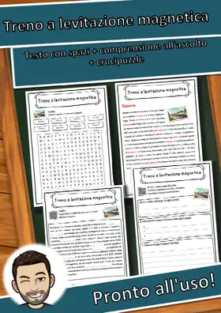
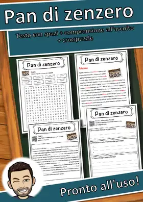
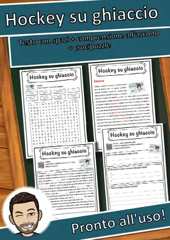
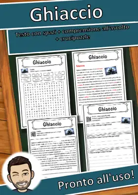
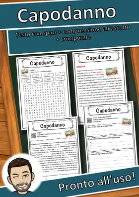
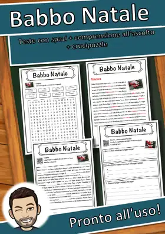
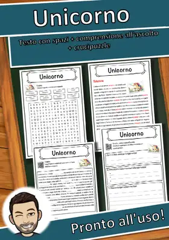
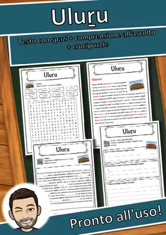
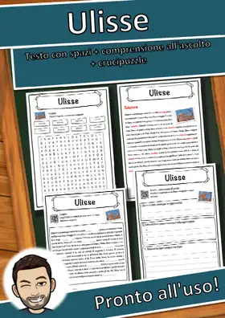

Da un insegnante per gli insegnanti
Pronto per la classe.
In cinque minuti.
Oltre 2.100 schede in italiano, pronte da stampare e con soluzioni: testo informativo con spazi vuoti, comprensione all'ascolto con codice QR e crucipuzzle.
Vai al mio negozio su edukiTutti i materiali
- 2.100+ schede
- Soluzioni incluse
- Senza preparazione: stampa e usa
- V primaria, IV primaria
Senza preparazione
PDF da stampare e usare subito. Ogni scheda contiene le soluzioni: ideale per il lavoro autonomo o una supplenza.
Pensato per la classe
Linguaggio chiaro e semplice, consegne passo dopo passo ed elementi di autocorrezione.
Leggere e ascoltare
Il testo è registrato: un codice QR porta all'audio in italiano (MP3 gratuito, senza registrazione).
Natale e inverno
Natale, neve, sport invernali e Capodanno: schede per la stagione fredda.

Treno a levitazione magnetica – Scheda: testo con spazi vuoti, comprensione all'ascolto e crucipuzzle
Rompighiaccio – Scheda: testo con spazi vuoti, comprensione all'ascolto e crucipuzzle

Pan di zenzero – Scheda: testo con spazi vuoti, comprensione all'ascolto e crucipuzzle

Hockey su ghiaccio – Scheda: testo con spazi vuoti, comprensione all'ascolto e crucipuzzle

Ghiaccio – Scheda: testo con spazi vuoti, comprensione all'ascolto e crucipuzzle
Cascate del Reno – Scheda: testo con spazi vuoti, comprensione all'ascolto e crucipuzzle

Capodanno – Scheda: testo con spazi vuoti, comprensione all'ascolto e crucipuzzle

Babbo Natale – Scheda: testo con spazi vuoti, comprensione all'ascolto e crucipuzzle
Novità
Nuovi materiali
Qui compaiono per prime le mie schede più recenti. L'elenco si aggiorna automaticamente.

Urali – Scheda: testo con spazi vuoti, comprensione all'ascolto e crucipuzzle

Uovo di Pasqua – Scheda: testo con spazi vuoti, comprensione all'ascolto e crucipuzzle

Unità di misura – Scheda: testo con spazi vuoti, comprensione all'ascolto e crucipuzzle

Uniforme – Scheda: testo con spazi vuoti, comprensione all'ascolto e crucipuzzle

Unicorno – Scheda: testo con spazi vuoti, comprensione all'ascolto e crucipuzzle
Umorismo – Scheda: testo con spazi vuoti, comprensione all'ascolto e crucipuzzle

Uluṟu – Scheda: testo con spazi vuoti, comprensione all'ascolto e crucipuzzle

Ulisse – Scheda: testo con spazi vuoti, comprensione all'ascolto e crucipuzzle
Schede di lettura
Testo informativo con spazi vuoti e banca delle parole, comprensione all'ascolto con codice QR (audio gratuito) e crucipuzzle, con soluzioni.
Urali – Scheda: testo con spazi vuoti, comprensione all'ascolto e crucipuzzle
Uovo di Pasqua – Scheda: testo con spazi vuoti, comprensione all'ascolto e crucipuzzle
Unità di misura – Scheda: testo con spazi vuoti, comprensione all'ascolto e crucipuzzle
Uniforme – Scheda: testo con spazi vuoti, comprensione all'ascolto e crucipuzzle
Unicorno – Scheda: testo con spazi vuoti, comprensione all'ascolto e crucipuzzle
Umorismo – Scheda: testo con spazi vuoti, comprensione all'ascolto e crucipuzzle
Uluṟu – Scheda: testo con spazi vuoti, comprensione all'ascolto e crucipuzzle
Ulisse – Scheda: testo con spazi vuoti, comprensione all'ascolto e crucipuzzle
Per tema
Tutte le schede di un'area in un'unica pagina.
Per classe
Scegli una classe per vedere le schede adatte.
Altre lingue
Questa pagina mostra solo materiali in italiano. Qui trovi i miei materiali in inglese, spagnolo, francese e tedesco.
Deutsch
Oltre 6.500 materiali in tedesco con soluzioni, disponibili su eduki.
Vai alla pagina in Deutsch →English
Letture, cacce al tesoro di lettura e laboratori di matematica in inglese, disponibili su TpT. · 3.716 materiali
Vai alla pagina in English →Español
Letture e cacce al tesoro di lettura in spagnolo, disponibili su TpT. · 2.166 materiali
Vai alla pagina in Español →Français
Schede in francese con testo con spazi vuoti, ascolto e crucipuzzle, disponibili su eduki. · 3.535 materiali
Vai alla pagina in Français →Domande frequenti
Dove posso acquistare le schede?
Le schede in italiano sono in vendita nel mio negozio “Snice” su eduki. Ogni pagina del materiale ha un pulsante che porta direttamente al prodotto.
Per quale classe?
La classe indicata su eduki è riportata in ogni pagina del materiale. Il testo è scritto in un linguaggio chiaro e semplice.
Le soluzioni sono incluse?
Sì, ogni scheda contiene le soluzioni.
In che formato?
File PDF da stampare, senza preparazione.
Ci sono materiali in altre lingue?
Sì: in “Altre lingue” trovi i miei materiali in inglese, spagnolo, francese e tedesco.
Da un insegnante per gli insegnanti
Sono un insegnante in Germania e creo i materiali prima di tutto per i miei alunni. Ogni scheda viene controllata prima della pubblicazione, così prepari meno e insegni di più.